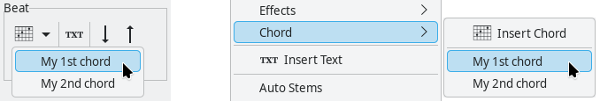
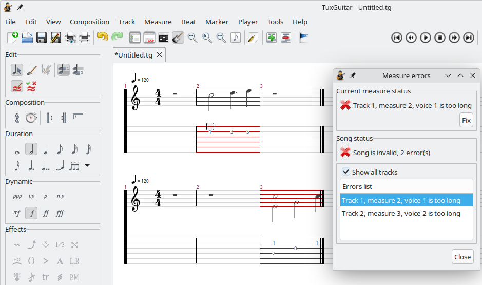

Each song consists of one or more tracks.
Each track is assigned to one instrument. Every instrument sounds different.
Before you start with notes
Before you start inserting notes into a new song, you have to adjust some settings in the Composition menu:
- A Time Signature must be defined for each song. Usually it is 4/4.
- The Tempo indicates how many beats (1/4 notes) the song has in a minute.
- The Clef affects the song display in scores.
- The Key Signature affects the way the notes are written in scores.
- Triplet Feel is a rhythmic pattern in which the duration of the first note in a pair is augmented and that of the second is diminished.
Track Properties
Track Properties can be adjusted for each track: track name, display color, instrument and tuning. You can access this dialog by choosing Track → Properties in the main menu.
Putting the notes in
Now you are ready to insert notes.
Navigating
You can change the current position of a note you want to enter by clicking on the desired location, or by navigating with arrows of a keyboard. Simply pressing the arrows left and right puts you on the next note in the current track, but Ctrl+(left or right) takes you to the previous or next measure. In the Tools → Settings dialog, you can select to play the beat when navigating with the arrow keys.
Arrows up and down navigate you through the strings in tablature editor.
Writing numbers

The Tablature Editor is represented by the number of the strings the instrument possesses. Each line is a string - when you type a number on a string [0 ... 29] editor puts on that string a note which is heard if you press a string on typed fret. The note has selected duration and dynamics you can modify afterwards. Refer to track properties dialog if you want to change number of frets.
If you navigate to an existing note (written as a number) and press Shift+(left or right) you will increase/decrease the pitch (fret) on the current string. If you press Shift+(up or down) you will move the fret value to the string up or down.
Clicking on the scores
To be able to insert notes by clicking on the scores, you should be in the Score Edition Mode (you can change mode in the Edit menu). When Score Edition Mode is enabled, you can check and uncheck the Sharp/Flat mode (in Edit menu, also) by which you can insert sharp notes.
Notes are inserted by clicking with the left mouse button on a line of the score or between two lines. If you decide to write notes above or below the five existing lines, additional lines will be inserted. When you click, a note appears at the selected position and in the tablature editor with the corresponding number on the corresponding string.
Note and measure duration
The most important property of a note is its duration. The sum of duration of all the notes in a measure is determined by the measure's time signature. TuxGuitar has a system that protects the user of making an irregular measure (longer or shorter).
Therefore, every new 4/4 measure can contain only one whole note. When you select a duration of a note you want to enter, TuxGuitar adjusts all the pauses between the current position and the end of a measure (or the next note entered) so you can insert as many notes as possible.
You can change time signature in Composition → Time Signature (or the "4/4" icon) and note duration in the submenu Beat → Duration or using the duration icons in the edit toolbar.
Dotted and double-dotted note
Dotted note has extended duration by 50%. It means that if you mark a 1/2 note as dotted, its duration will be 1/2 + 1/4 = 3/4.
Double dotted note has duration extended by 75%. That means that 1/4 double dotted note will have duration of 1/4 + 1/8 + 1/16 = 7/16.
Tied note
When a note is played on the end of one measure but lasts in the next measure also, you have to use a tied note. You achieve the effect by putting the note on the end of a first measure and then put the same note on the beginning of next measure. Then you have to mark the second note as a tied note.
You can also use a tied note in a situation where you need a note which has duration of a 5/16 note - a duration you cannot achieve by dotted or double dotted note. Then you have to tie a 1/4 and 1/16 note.
Note dynamics
A very important property of a note is its dynamics: the "loudness" of a note. For each note you can put wanted dynamics.

When you create a note, it will have dynamics previously selected. If you click on other dynamics' icon when positioned on existing note, the note will change its dynamics. In TuxGuitar dynamics is marked in standard manner (mp for mezzo-piano, fff for forte fortissimo, etc.)
Insert chord
You can also put some notes into the song by inserting a chord. Chord's duration and dynamics will be those currently selected.
You can insert a chord defined earlier (as on the picture above) or you can use the Chord Editor to generate a new chord (and even define a name for it for later use).
Free Edition Mode
By default, TuxGuitar makes sure that all measures are correct: The sum of the note durations for each voice in one measure is exactly the same as the total duration of the measure. This is pretty convenient when creating a new tablature, however it can make the edition of an existing tablature tedious in some cases. You can bypass this constraint with the menu Edit → Free Edition Mode or the associated button in the edit toolbar.
Warning: only activate this mode if you have a correct knowledge of music theory. Free Edition Mode lets you do pretty much everything with notes duration, and is not so easy to use especially when two voices are used. And while it's very easy to create invalid measures, it may be tricky to restore a valid state. Invalid measures will appear with red lines. It's good practice to fix all invalid measures before saving a tablature file.
Menu Edit → Show measure errors can help you locate invalid measures in a song and identify invalid voice(s). In the dialog, "Fix" button can restore a measure in a valid state, by adapting the end of the measure. Be prepared to lose some notes when using this feature.
After putting the notes
After writing the things you wanted, you will probably want to hear what's done. After checking you will probably want to change something - listening and correction makes it perfect.
Effects
Playing guitar isn't just playing a note in a right time. There are some little tricks we all use, like bend, palm mute, etc. TuxGuitar supports most of them. Many effects are applied on the current note. Read more about Note effects in this help.
Repeat
Sometimes in a song all the instruments are played the same way several times (e.g. in chorus). It is more elegant to mark that segment of a song for repetition than to copy/paste that passage again.
Repeat is set over one or more measures. It has a beginning, an end and information how many times to repeat. So, if you want a passage to be played twice, you start repeat and end it on appropriate place. When asked how many times to repeat you should set 1 if you want it to be played twice.
Repeats are even more convenient to use with alternative endings - you define different ending measures for each repeat. So, after you close a repeat and mark it as an alternative ending the editor will appear to select at which repeats this ending will play. It is a little hard to explain, but if you try the option, you will find it self-explanatory.

Lyrics
TuxGuitar supports adding lyrics to a track. The lyrics editor is accessed by selecting Track → Lyrics from the main menu.
Text
Beat → Insert Text is similar to lyrics, but the text is not tied to notes. It is most often used as a note to the player or a comment to tab. It is displayed above the note it is assigned to.
Just one instrument?
Well, probably not. But you have to write something to be able to write some more. You will probably want to add more instruments (tracks) and enter the wonderful world of multi-track editing. :)
But even if you have only one track in a song, it is still a song. Songs have some additional properties and editing options, so you should read the section on editing a song.
The Percussion track
The track for drums and percussions is treated a little bit differently in TuxGuitar than the other, "ordinary" tracks. It always has to be on MIDI channel 9 - that is achieved by checking the Percussion Channel option in the Instrument list under View → Show Instruments. There is a special tool for editing the percussion track - besides the usual editing (by entering numbers on the tab), you can also use the Matrix Editor from View → Show Matrix.